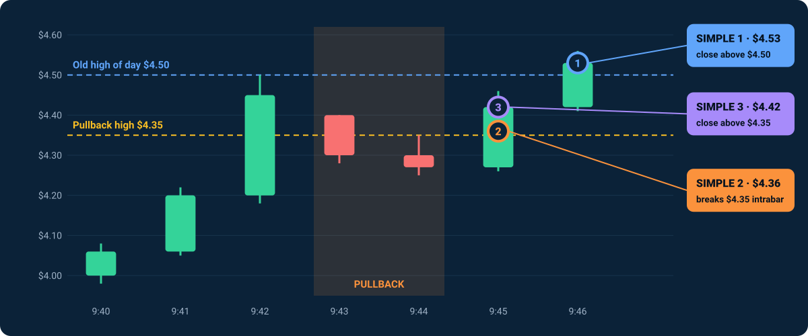

Research archive
The research behind TrevorTrader
Exact rules, current test configurations, how results are verified, and the full history of earlier engines, including losses. Nothing here is investment advice. All trading is in paper (simulated) accounts.
Daily reviews
Life of the Trade: every session, every trade, and what we learned.
Open daily reviews →Audit archive
Historical performance of every engine and version, including losses.
Open audit archive →Latest review
The most recent published session.
Open latest →Current configurations (from October 12, 2026)
On October 9, 2026 we stopped all earlier engines and started over with one simple strategy, historically named SURGE Simple, running in three separate paper accounts. Each configuration has its own account, code version, trade ledger and scorecard, so every result belongs to exactly one set of rules.
| Scanner | Entry | Positions / day | Daily loss limit | |
|---|---|---|---|---|
| Simple 1 | $3–$20, up 30%+, 500K+ shares, 5× relative volume, float under 5M | 1-minute close above the high of day | 2 | $100 |
| Simple 2 | $2–$10, up 10%+, 500K+ shares | Pullback, then price breaks the pullback high (intrabar) | 8 | $150 |
| Simple 3 | $2–$10, up 10%+, 500K+ shares | Pullback, then a 1-minute close above the pullback high | No cap | $200 |
Because the scanner, caps and limits differ, configurations are compared on matched opportunities as well as totals. Simple 2 versus Simple 3 is the cleanest entry comparison: same scanner, same exits, different entry. Simple 1 tests stricter stock selection together with a new-high entry.
Scan rules
- Universe: active, tradable, exchange-listed US stocks (no OTC), plus the market's top movers and most-active lists. Checked every 30 seconds from 4:00 AM ET.
- Price and gain: the latest trade must be from today and the quote no more than 15 seconds old. Gain is measured from the prior session's close.
- Volume: shares traded today, including premarket.
- Relative volume (Simple 1): today's shares traded in completed 1-minute bars since 4:00 AM ET, divided by the average shares traded up to the same clock time over the last 10 trading days (split-adjusted). Fewer than 5 days of history or any data error means the stock is skipped.
- Float (Simple 1): looked up from Yahoo Finance and accepted only if retrieved the same day. Yahoo doesn't publish the date of its float figure, so it can lag after a share offering or reverse split. A stock with no float is skipped.
- Ranking: stocks that pass are tried from the biggest percentage gain down.
Entry rules
- New high of day (Simple 1): the newest completed 1-minute bar closes above every earlier high since 4:00 AM ET.
- Pullback (Simple 2 and 3): after a bar makes a new high of day, 1 to 3 bars follow with no higher high, staying above that bar's low. The trigger is the last pullback bar's high.
- Simple 2 buys when a trade prints above the trigger during the current minute. It checks every 30-second scan, so it can lag the exact break by up to about 30 seconds. Simple 3 waits for a 1-minute close above the trigger.
- Order checks (all three): a fresh quote, spread no more than 1.5%, ask no more than 1% above the signal price. Limit order at the ask, canceled if not filled within 5 seconds.

Exit and risk rules (same for all three)
- About $20 of risk per trade; order size is capped at 50% of account equity.
- Stop based on the recent 1-minute lows, with a hard backstop. Target at 2× the risk. Time exit after 10 minutes.
- One position at a time. A stock is locked out for the day after 2 losses.
- Daily loss limit per configuration (see the table). Positions opened are counted, not orders or partial fills; exits are never blocked.
- No new entries after 12:45 PT. Everything is flat by 12:55 PT.
How results are verified
- After each session, an end-of-day check matches every broker order and fill against the trading engine's own ledger and logs, confirms the account is flat with no open orders, and checks the code version that traded.
- If anything doesn't match, nothing is published for that day. A failed check is never shown as a zero.
- Results are gross, before fees. Fees and net results stay marked "pending" until confirmed; they are never estimated.
- Each code version has its own identifier, and results are never moved between versions.
Research plan
- Entry comparison (from October 12): keep all three configurations unchanged and judge them on a meaningful sample, aiming for about 100 trades each.
- Momentum and volume filters: MACD and breakout-candle volume are recorded for every trade from day one, without affecting trading, then tested as filters on the best entry.
- Exit research: trailing-stop variants that lock in gains, simulated on recorded data before any use.
A losing trade is evidence, not a reason to change rules mid-test. Level 2 and Time & Sales data are not available in our data feed and remain future research.
Earlier engines
CORE (SPY option reversals) is parked. RANGE (SPY option range breakouts) and SURGE-R are retired. Earlier SURGE versions ran from October 5 to 9. All of their paper results, including losses, are kept unchanged in the audit archive and the daily reviews, and are never presented as results of the current configurations.
Platform design
TrevorTrader is engineered as one modular system, not a collection of disconnected bots. Scan, entry and exit components can change independently while sharing the same execution safeguards, risk controls, reconciliation and review.
- Modular: each configuration keeps its own rules, evidence, version history and performance record.
- Controlled: orders pass validation and risk checks before reaching the broker; paper endpoints and account IDs are verified.
- Traceable: signals, orders, rejected decisions and outcomes are logged and auditable.
- Evidence first: changes are tested on recorded data and in paper trading before they change behavior.
TrevorTrader is not currently offered for sale.